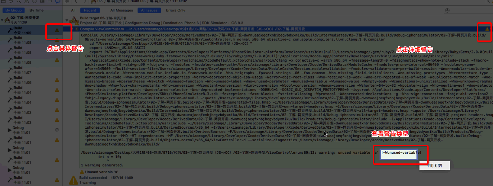
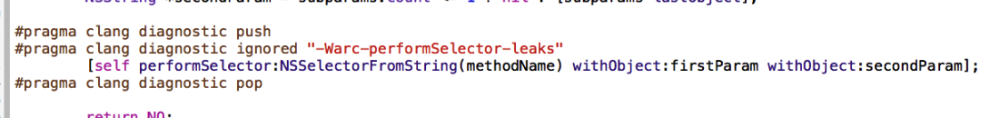

安装服务端软件

配置服务端仓库和权限等
- 选empty仓库
- 选nobody权限,不让任何人访问

创建用户配置权限


创建工作组,方便整体切换到其他工作项目

在客户端访问服务端

终端命令

在经理工作组账号里初始化代码


删除代码

多人开发


多人开发冲突如何解决

1
| |
1
| |
1 2 3 4 5 6 7 | |
1
| |
1 2 3 4 5 6 7 | |
1
| |


1 友盟 2 flurry 3 crashlytics
1 2 3 4 5 6 7 8 9 10 11 12 13 14 15 | |
1 2 3 4 5 6 7 8 9 | |
1 2 3 4 5 6 7 8 9 10 11 12 13 14 15 16 17 18 19 20 21 22 | |
1 2 3 4 5 6 7 8 9 10 11 12 13 14 15 16 17 18 19 20 21 22 23 24 25 26 27 28 29 30 31 32 33 | |
1 2 3 | |
按照官方文档，Source的分类
按照函数调用栈，Source的分类


1 2 3 4 5 6 7 8 9 10 | |


_maxCacheAge ＝ kDefaultCacheMaxCacheAge
NSCache！
maxConcurrentDownloads ＝ 6 是程序固定死了，可以通过属性进行调整！
支持
// #import <ImageIO/ImageIO.h>
[UIImage animatedImageWithImages:images duration:duration];
根据图像数据第一个字节来判断的！
PNG：压缩比没有JPG高，但是无损压缩，解压缩性能高，苹果推荐的图像格式！
JPG：压缩比最高的一种图片格式，有损压缩！最多使用的场景，照相机！
解压缩的性能不好！
GIF：序列桢动图，特点：只支持256种颜色！最流行的时候在1998～1999，有专利的！
www.baidu.com/logo.png
如果单纯使用 文件名保存，重名的几率很高！
使用 MD5 的散列函数！对完整的 URL 进行 md5，结果是一个 32 个字符长度的字符串！

- UIApplicationDidReceiveMemoryWarningNotification 接收到内存警告的通知
- UIApplicationWillTerminateNotification 接收到应用程序将要终止通知
- UIApplicationDidEnterBackgroundNotification 接收到应用程序进入后台通知
通过以上退出的通知，能够保证缓存文件的大小始终在控制范围之内！

po NSHomeDirectory()
po [[NSBundle mainBundle] bundlePath]
不用在开发时，写大量的 NSLog

NSUserDefault 直接读写！synchronize
bundle 路径
/Users/apple/Library/Developer/CoreSimulator/Devices/73ADBB27-9F61-4D2D-9C1B-D3340507F70A/data/Containers/Bundle/Application/4EAD4389-FEAB-46B0-B053-E4405CF75230/
沙盒路径
/Users/apple/Library/Developer/CoreSimulator/Devices/73ADBB27-9F61-4D2D-9C1B-D3340507F70A/data/Containers/Data/Application/AD1CEEEC-B8D7-415E-A254-32F31BE738DF
UDID - 随即声成的一组唯一的字符串组合
注意：以上的特点是在 iOS 8.0 以上才有的，会更安全！
在 iOS 7.0 以及之前，Bunlde 的路径和沙盒的路径在一个目录下！
iOS 程序员，一定要熟悉各个版本之间的变化！
新出了一个非常流行的面试题：一个 iOS 6.0 的程序，直接在 iOS 7.0 的设备上运行，通常会出现什么问题？


状态栏高度 20 个点是不包含在 view.frame 中的，self.view 的左上角原点的坐标位置是从状态栏下方开始计算
如果包含有 UINavigationController，self.view的左上角坐标原点从状态栏下方开始计算
如果包含有 UITabBarController，self.view的底部不包含 TabBar
所谓设计模式，就是经过无数程序员的努力，在很多代码的基础上抽取出来的"模式"
一种设计模式，通常用来解决一种问题
也是一个设计模式，主要解决：界面(V)，数据模型(M)，彼此之间的关联和控制© 目的：让UI交互与数据模型解耦！
定义对象间的一种一对多的依赖关系，当一个对象的状态发生改变时，所有依赖于它的对象都得到通知并被自动更新
iOS 中，通知中心和 KVO 都属于观察者模式
保证一个类仅有一个实例，并提供一个访问它的全局访问点
iOS 中常见的单例 - UIApplication - NSFileManager - NSUserDefaults - NSNotificationCenter
在iOS开发中，单例的应用非常广，甚至有滥用的趋势！
1 2 | |
苹果官方非常不推荐这种写法！1 2 3 4 5 6 7 8 | |


创建NSInvocationOperation对象
调用start方法开始执行操作
注意,和NSThread不同点如下:
创建NSBlockOperation对象
通过addExecutionBlock:方法添加更多的操作
注意：只要NSBlockOperation封装的操作数 > 1，就会异步执行操作
NSOperation 默认提供了一个 completionBlock 的参数，一旦设置，就会在操作执行完毕后，自动执行！
－ completionBlock 会在后台线程执行，不会在主线程执行，所以如果要更新UI，需要注意线程 － completionBlock 不能接受参数，没有返回值，因此在使用的时候，会有很多限制！
NSOperationQueue队列类型:
添加操作到NSOperationQueue中
NSOpreation的最大并发数
最大并发数的相关方法
暂停和恢复队列,为了增强用户体验,使用queue的挂起和开启来切换,GCD和NSThread都没有这个功能
NSOperation取消的注意点:
NSOperationQueue的依赖,任务执行顺序
NSOperationQueue还可以设置里面任务的完成监听方法
Temp 下载的文件都是临时,随时删除 Caches 下载的文件要永久保留 Document里面禁止放下载文件,否则审核不通过


1 2 3 4 | |
1 2 3 4 5 | |
1 2 3 | |
1 2 3 4 | |
1 2 3 4 | |
1 2 | |
1 2 3 4 5 6 | |
1 2 3 4 | |
1 2 3 4 5 | |
1 2 3 4 | |
1 2 3 4 5 6 7 8 9 10 11 12 13 14 15 16 | |
1 2 3 4 5 6 7 8 9 10 11 12 13 14 15 16 17 18 19 20 21 22 23 24 25 26 27 28 29 30 31 32 33 34 35 36 37 38 39 40 41 42 43 44 45 46 47 48 49 | |
1 2 3 4 5 6 7 8 9 10 11 12 | |
1 2 3 4 5 6 7 8 9 | |
1 2 3 4 5 6 7 8 9 10 11 12 13 14 15 16 17 18 19 20 21 22 23 24 25 26 27 28 29 30 | |
1 2 3 4 5 6 7 8 9 10 11 12 13 14 15 16 17 18 19 20 21 22 23 24 25 26 27 28 29 | |